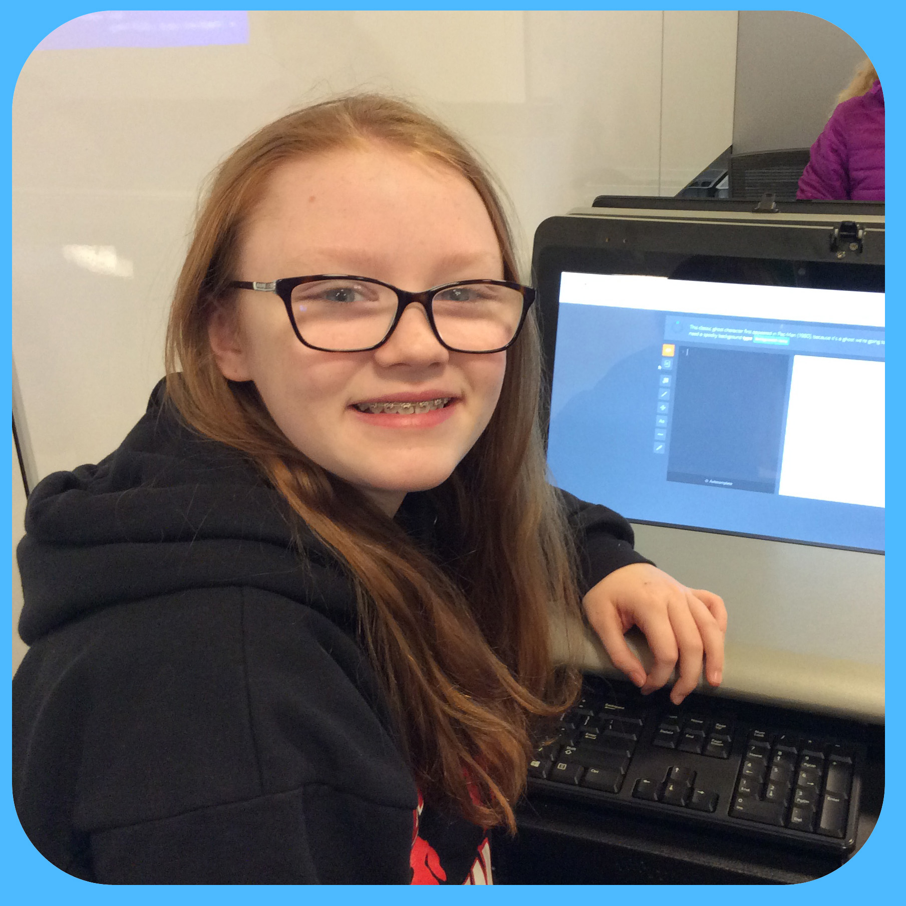
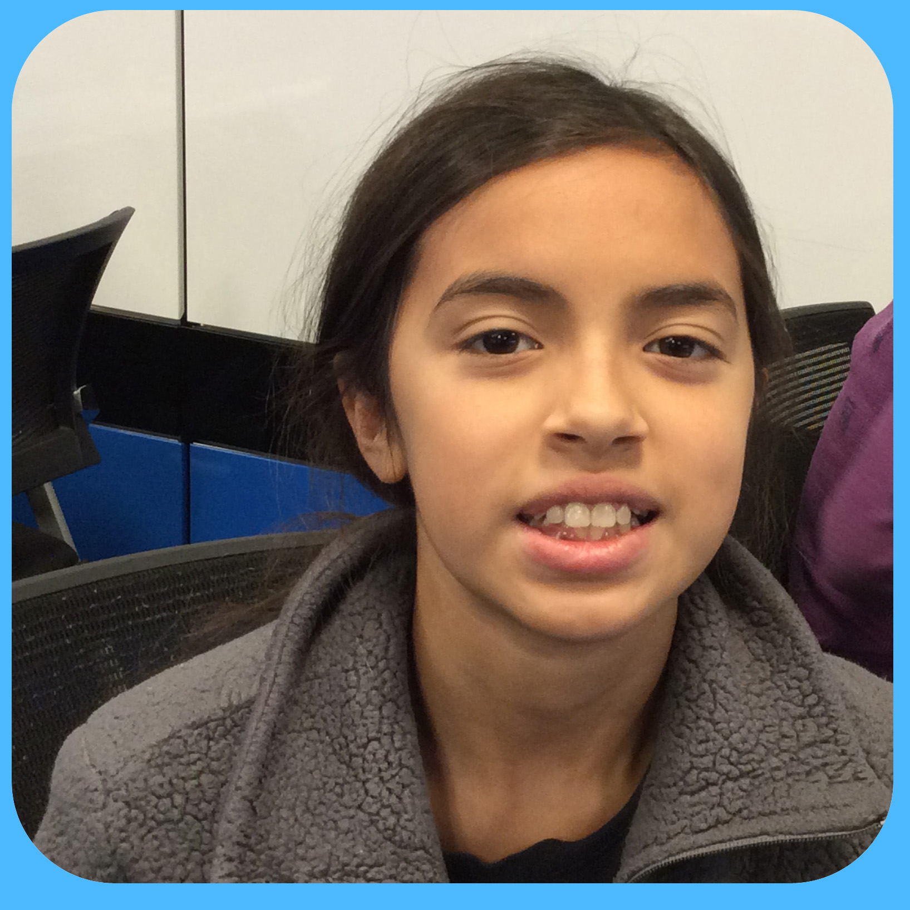
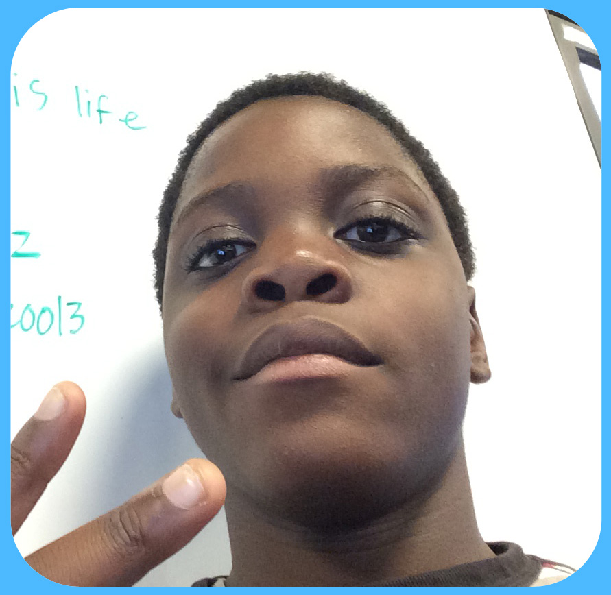
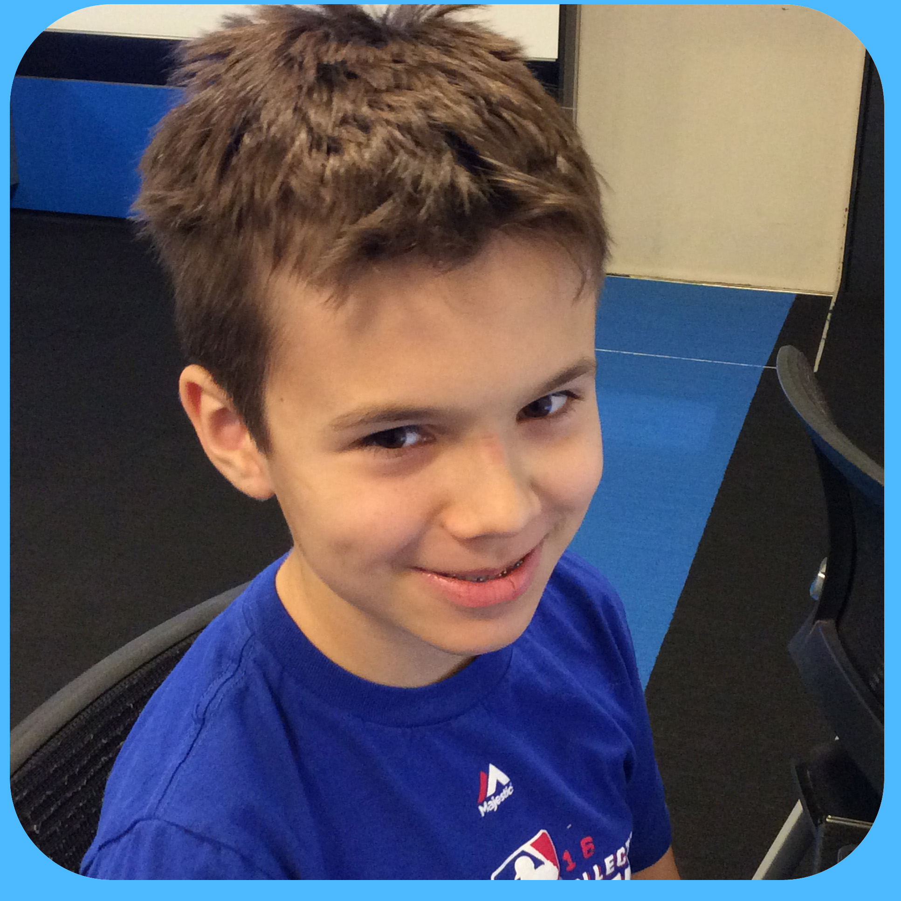
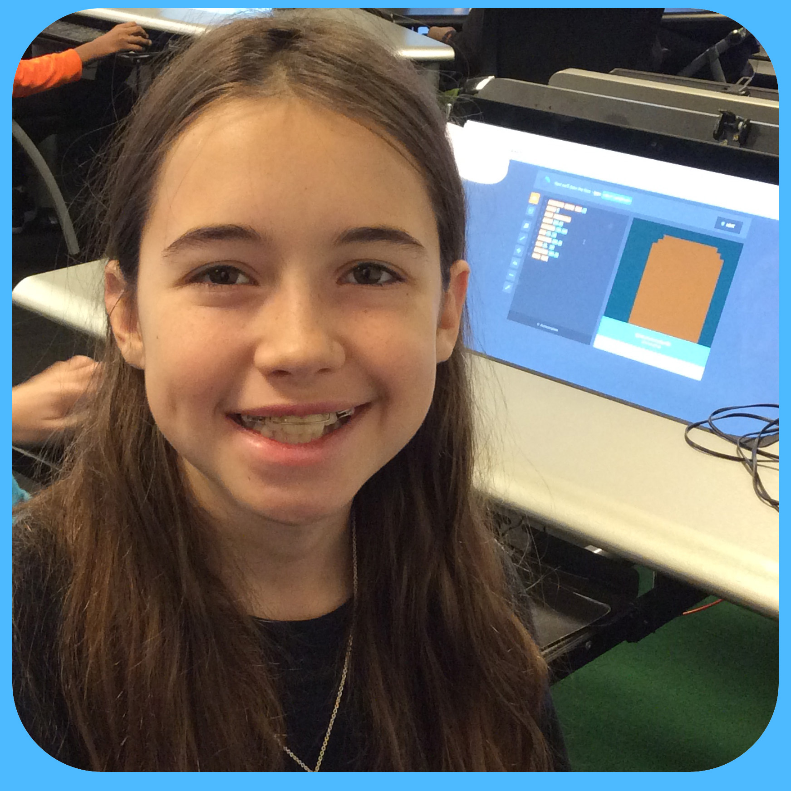
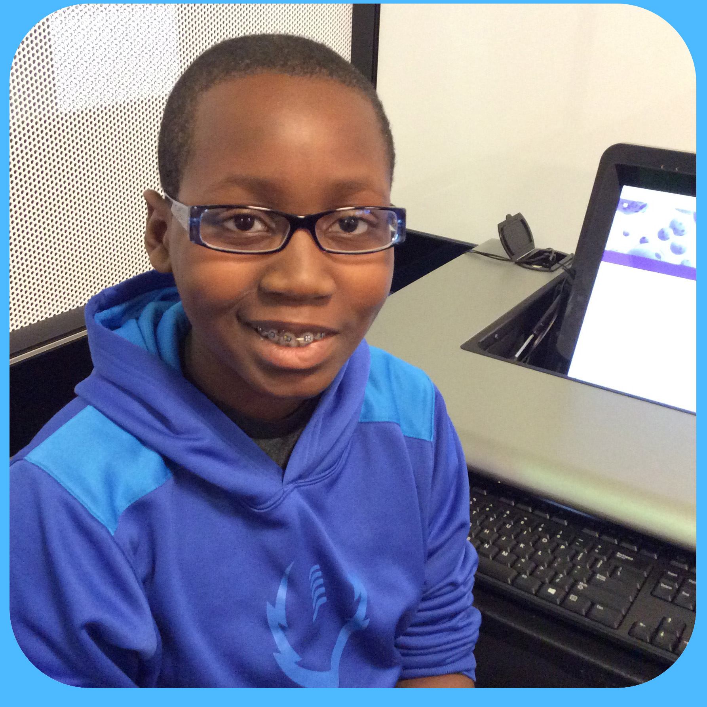

Brigid: Designing your own game is a way for you to see how much creativity you have and how your imagination works.
Cosette: I like programming games, because I can make it however I want and I get to use my imagination when I program games.
Elena: Game design prepares you for the future.
Neenah: students should learn game design so that they can use it in engineering jobs.
Samuel: students should learn game design because it is a good way to use a computer and you can program many things that could affect the next world.
Eman: I personally think that coding is really cool and you can do anything with it. :)
Jude:There is so much in the outside world that uses computers its stupid to NOT learn it
Quincy: designing is super fun because it enriches your learning and you create super fun things.
Renee: Students should learn game design because it can help them in the future. If you keep it up, leaning game design could get you into a good college, and a good job. I like programming games because it is fun, simple, and will help me later in the future.
Emeka: Students should learn game design because it can help them have fun, learn about how to program, and give them more features and options for a career. The thing I like about designing and programming games is that even though people find it boring sometimes, it's rewarding and creative in YOUR own way. That's why we design and program.
